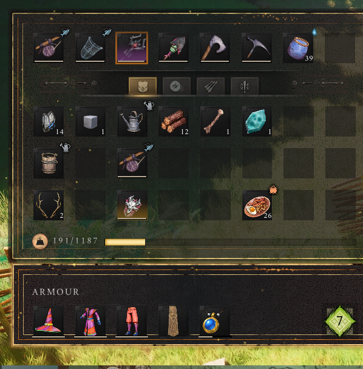

Your first session
From your first login to a bed at camp, without assuming you know the genre.
On this page
Controls for this walkthrough
Interact E · Inventory Tab · Map M / J · Build B
Full controls and menu navigation · * marks a controller-equivalent mapping; the in-game prompt takes priority.
1. Get your bearings
Join DragonInfinity first. A new adventurer begins at the ruined Temple of Saradomin in Temple Woods. Learn movement, interacting and opening the map before you wander away. Speak to the Wise Old Man nearby.
2. Choose your start
Play the tutorial
Accept the Wise Old Man’s introductory lessons. Doric introduces survival and crafting, Vannaka covers early combat and cooking, and Zanik introduces magic. This gives you guided practice before you depend on the group.
Skip the lessons
Decline the tutorial when the Wise Old Man offers it. You can head towards camp sooner, but you miss the guided explanation. Ask someone to meet you, and learn the essential actions below before venturing out alone.
Skipping the tutorial is not a grant of high-level equipment or protection. Confirm what starter supplies the host is offering. Follow the current dialogue rather than looking for a specific button label from an older video.
3. Learn the essentials
- Gather: pick up useful loose materials. Read the object name before interacting.
- Craft: open a suitable workbench, select a recipe and check its ingredients. Craft one useful item before attempting a whole equipment set.
- Equip: put the tool or weapon on your quick-access bar and select it. Having something in your bag does not mean it is in your hand.
- Fight: practise attacking, blocking and dodging where there is room to retreat. Stop attacking before your stamina is exhausted.
- Navigate: open the map, identify your own marker and compare it with the camp map. Use the compass to maintain your direction.


4. Follow the tutorial, if you chose it
Doric sends you for water and introduces the Crafting Table and Stone Club. Vannaka’s rat hunt leads into campfire cooking. Zanik teaches rune preparation and a gathering spell. Read each active objective before gathering: the quest log tells you what the game currently expects.
When the introductory lessons are complete, the Wise Old Man awaits in Bramblemead Village. The village quest destination and our clan camp are different places; use the camp route below to find the group.
5. Reach camp and settle in
Follow the annotated route to basecamp. Ask which beds and chests are free. Claim an available bed through its interaction prompt and confirm your own bed marker. Put spare materials in the correct storage, then ask what the group needs next.
Saved on this browser only. Tick items as you go.
Follow every tutorial step
Want exact material counts and directions? Use the full Doric → Vannaka → Zanik walkthrough. It explains what to collect, what to craft and why each lesson matters.
Further reading
For exact requirements, detailed walkthroughs and more depth, visit the topic pages below.
Wiki adaptations and data: RuneScape: Dragonwilds Wiki contributors, CC BY-NC-SA 3.0. See credits for source dates.